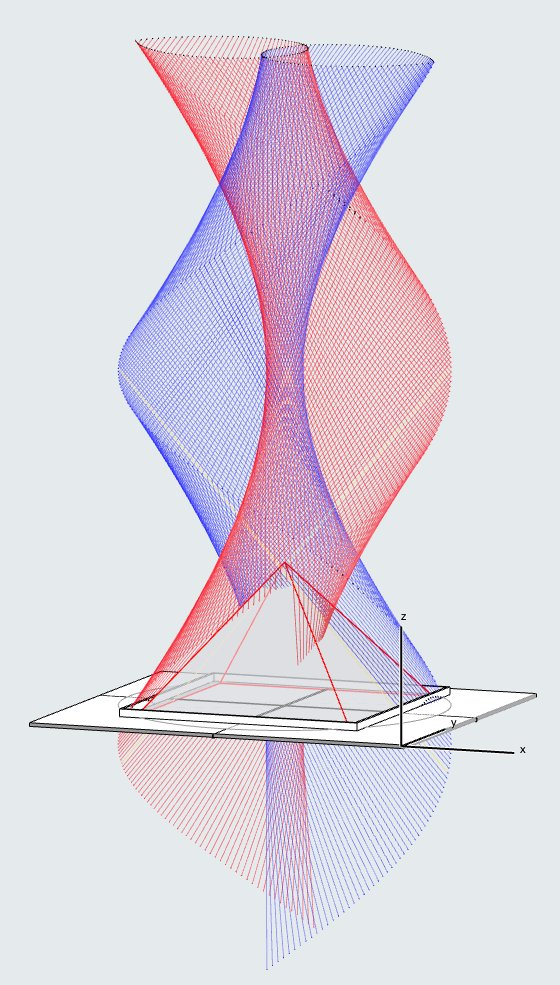
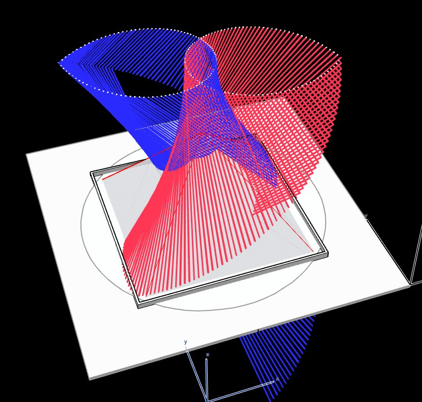
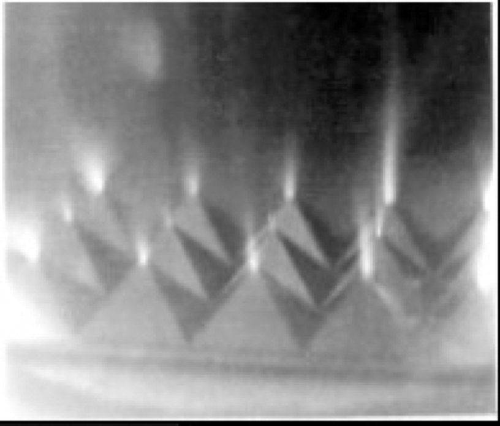
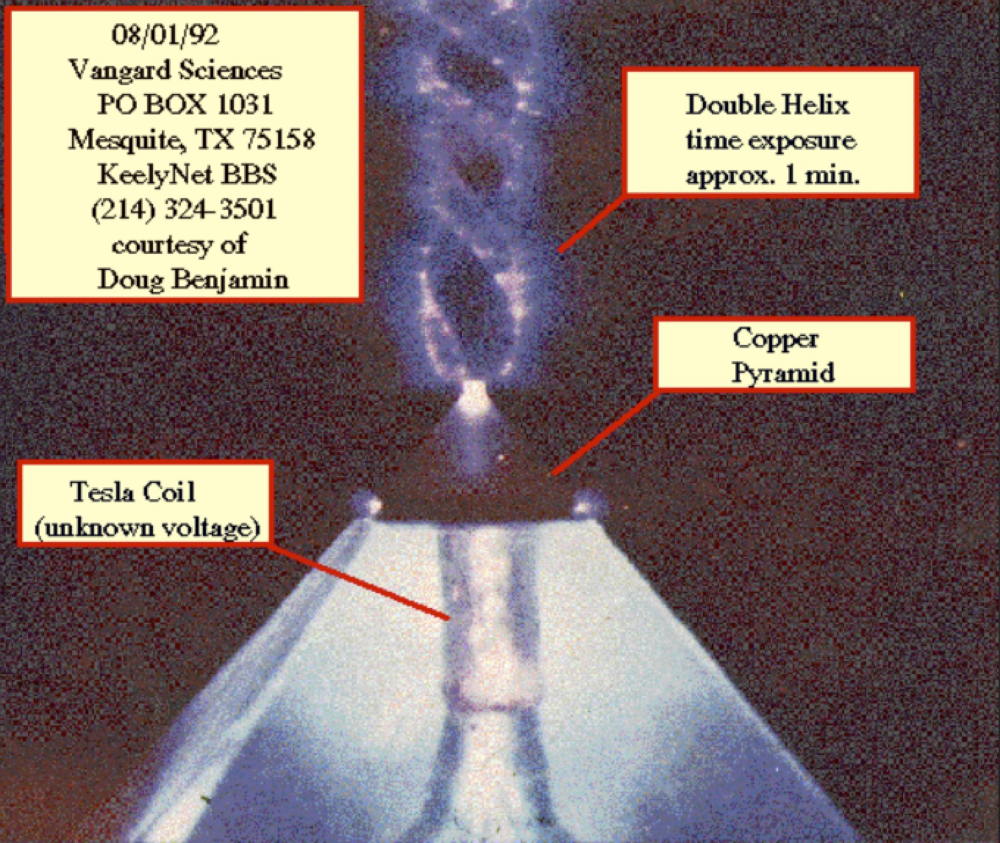
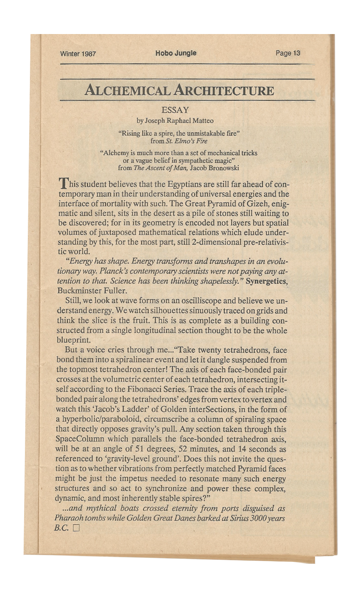
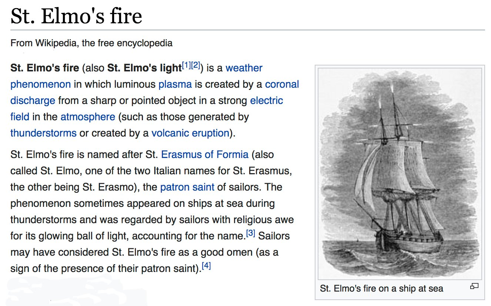
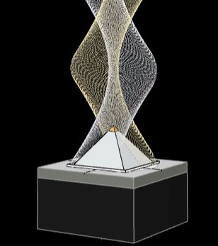

GIZAPyramid of Giza




"Alchemical Architecture" - An essay written for our local writer's group literary magazine in Washington Ct. in 1987. It was the first narrative explanation of the TetraWave geometry ...based on an Inspired "download" during meditation after asking if there was a possible relationship of the Tetrahelix with the Egyptian Giza Pyramid.


